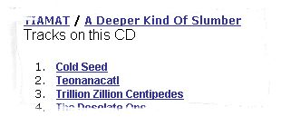
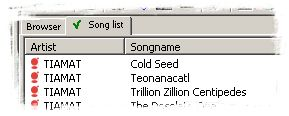
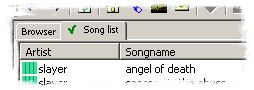
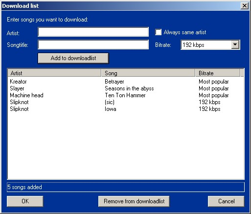

| Homepage: http://www.ractive.ch/gpl/AGStreme.html |
Introduction
Audiogalaxy is a MP3 file-sharing platform. It somehow
works like napster, but the user-interface is quite different. The whole system
is web-based. This means that you take all your actions in your
web-browser.
JAGS has a built-in webbrowser for easy access.
In order to download and share your songs, the AudioGalaxy satellite must be running. The satellite does nothing more than sending/receiving the files. By starting JAGS, the satellite is also loaded.
First steps
When you start JAGS for the first time after the installation you either can create a new account or enter the information of an existing account.
You then have to choose a directory you want to share with other users. This directory will be also your download directory. You can change the download location afterward, though.
When you first start JAGS, the main view looks quite messy. All panes are arranged vertically. Rearrange them as you want :-)
Please have a look here, to have some tips how to do that.... (highly recommended!!!).
Change your preferences!
Search and download
Now to the important stuff... How to get your files! :-)
Search for songs
To search for songs, enter your search in the search field of the audiogalaxy webpage:

To search for a specific song of a specific band, enter the bandname and the songname.
A list of available songs will appear:

This first page gives you an overview of all found songs. The result also can contain cover versions etc.
To limit the search to a certain band, click on the bandname (as indicated in the picture). The result list will only contain songs of this band then.
To search for all songs of a band, just enter the bandname in the search field. In most cases all available songs of the band will be listed. Otherwise you can select the correct band in the overview pages as described above, by clicking on the band's name.
Search for a whole album
You can search for whole albums on CDDB. CDDB is a database that contains information about almost any record on the planet.
There are two possibilities to search for a whole album. You can either use
the wizard or search on CDDB's
homepage.
Unfortunately there are some bugs in the CDDB control that prevents
the wizard to work properly. Many albums are not found :-( As soon as CDDB will
release their new control, I will include it in AGStreme.
Search online
A very simple method to search for an album is the online search at www.cddb.com. Simply click on the "CDDB search" button to go to the CDDB homepage.
There you can enter your search. When you found your album, the songs are listed in the "Song list" tab


Select the files you want to download, right-click on the selection and choose the desired bitrate.
Download a song
To download songs, the satellite must be connected and you must be logged in. Have a look at the status-bar of JAGS to see if a connection with audio-galaxy could be established:

To downlaod a song you have several possibiblities:
Downloading on the Web-Page:
In most cases it's ok to click on the satellite.
Downloading with the Song-List:

If a song is queued you can just sit back and wait. The AudioGalaxy makes the rest for you. As soon as the song is available by another user, the download begins. You can easily interrupt downloads. Broken downloads will be resumed the next time you go online again!
Enter multiple songs to search for
To search for multiple songs, open the "Download list" dialog

Enter the artist name and the songtitle and hit "Add to downloadlist" button to add the song to the list. If you want to download a couple of songs of the same artist, enable the "Always same artist" check-box.
Choose the desired bitrate!
When you hit OK, the songs are searched on Audiogalaxy and added to your queue if possible.
Cancel downloads
To stop downloading a song, go to your satellite queue,
either by clicking on the satellite icon on audiogalaxy's page or by click on
the satellite icon in the browser toolbar 
A list of all current downloads will be shown.

Click on "stop" of a certain song to stop the download.
The page may not be always up to date, because there's a small delay between your PC and the AudioGalaxy server. Just keep on clicking on the satellite icon until the download you want to cancel appears.
Why using the JAGS built-in browser?
The biggest advantage is that it allows you to easily download blocked songs and that it shows all songs in the "Song list" tab. But this does not mean that you HAVE to use the built-in browser :-)